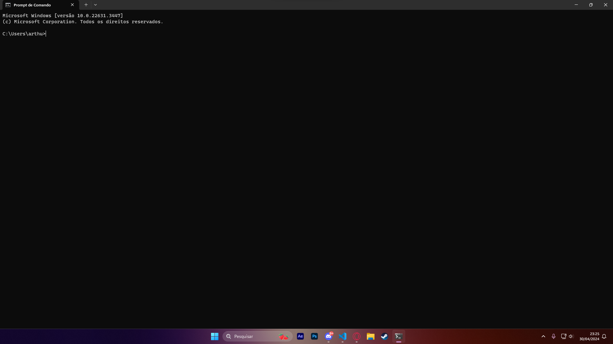
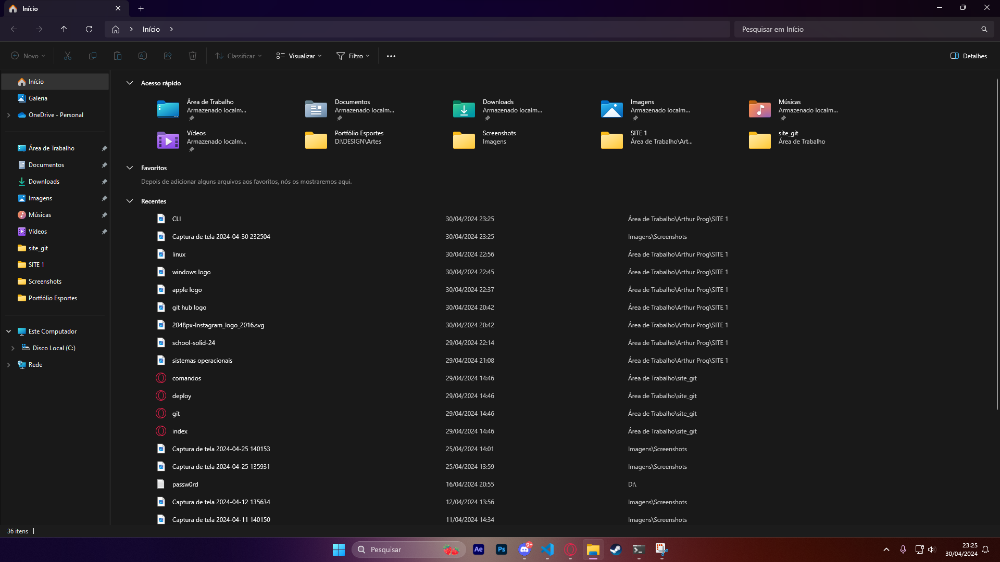

Interfaces
CLI
Uma interface de linha de comando (CLI) é um mecanismo de software que você usa para interagir com o sistema operacional usando o teclado.

GUI
Uma interface gráfica (GUI), que hoje é popular em todas as aplicações e sistemas de software.
